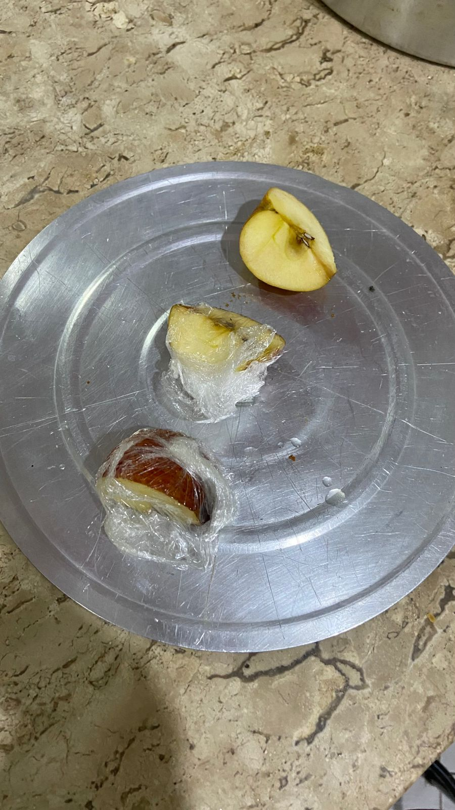
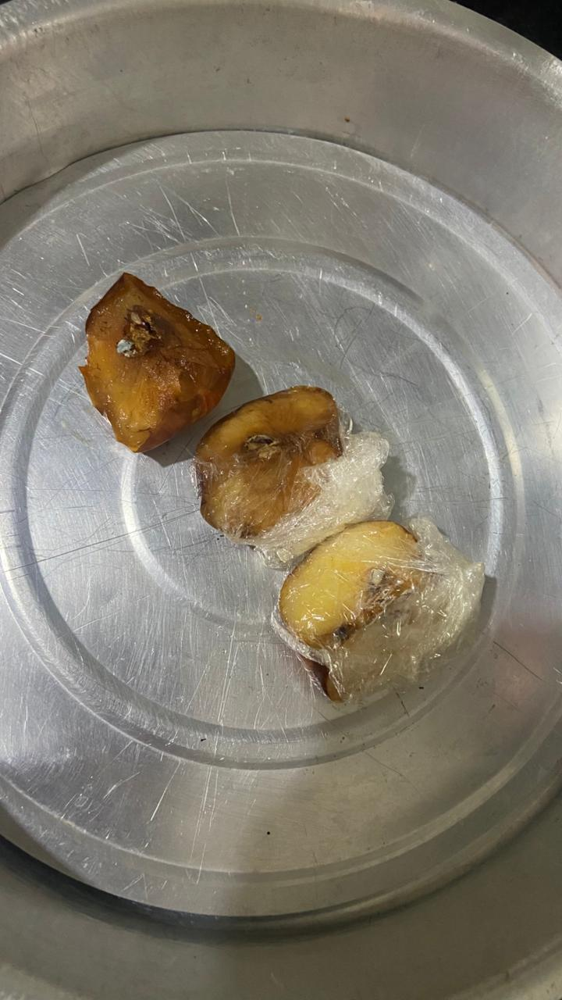

1. Observação
O que chamou atenção: Ao cortar uma maçã e deixá-la descansando em um prato, notamos que em questão de minutos a polpa da fruta, que originalmente era clara e amarelada, começa a ganhar uma coloração marrom com aspecto oxidado.
2. Problema
A pergunta científica: Por que a maçã muda de cor e escurece apenas depois de ser cortada e exposta ao ambiente? O que está no ar ou na faca que causa essa transformação química de forma tão rápida?
3. Hipótese
Nosso palpite: O oxigênio presente no ar reage com as substâncias do interior da maçã quando a casca é rompida. Acreditamos que isolar a maçã do ar ou aplicar um ácido cítrico (como suco de limão) impedirá essa reação.
4. Experimento
- ● Fatia A (Controle): Exposta livremente ao ar livre.
- ● Fatia B: Banhada com gotas de suco de limão.
- ● Fatia C: Embalada firmemente em plástico filme.
- 🍎 1 Maçã fresca
- 🔪 1 Faca
- 🍋 Meio limão
- 🧻 Plástico filme
- 🍽️ 3 pratos
- ⏱️ Cronômetro
5. Análise
Observações: A Fatia A (Controle) começou a escurecer após 15 min. A Fatia B
(Limão) continuou clara e intacta. A Fatia C (Plástico) demorou muito mais, apresentando leves
manchas.
Inesperado: A Fatia C escureceu um pouquinho porque oxigênio residual ficou preso no
plástico.
6. Evidência Fotográfica

Polpa clara e aspecto fresco imediatamente após o corte e aplicação dos métodos.

Resultados visíveis da oxidação nas fatias, evidenciando o efeito do tempo e exposição.
7. Conclusão
Sim! Confirmamos que o escurecimento é causado pelo contato direto com o oxigênio do ar e que pode ser inibido através de intervenções químicas (ácido) e físicas (barreira).
As maçãs contêm uma enzima chamada Polifenol Oxidase (PPO). O corte rompe as células, expondo a enzima ao oxigênio. Isso oxida os compostos fenólicos, gerando melanina vegetal (a cor marrom). O ácido do limão desnatura essa enzima, parando a reação.